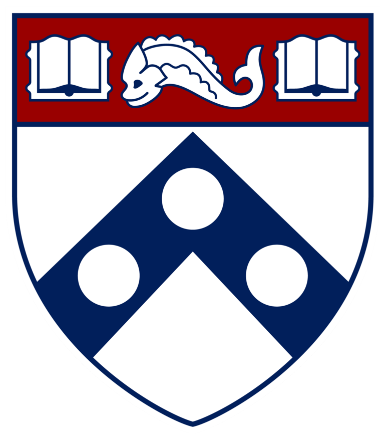
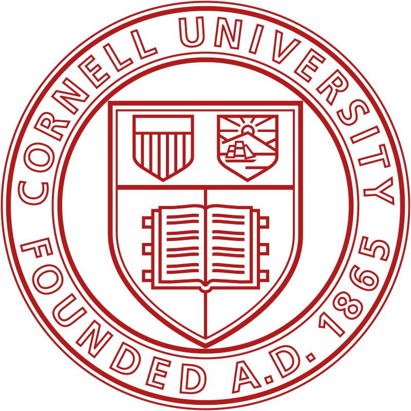
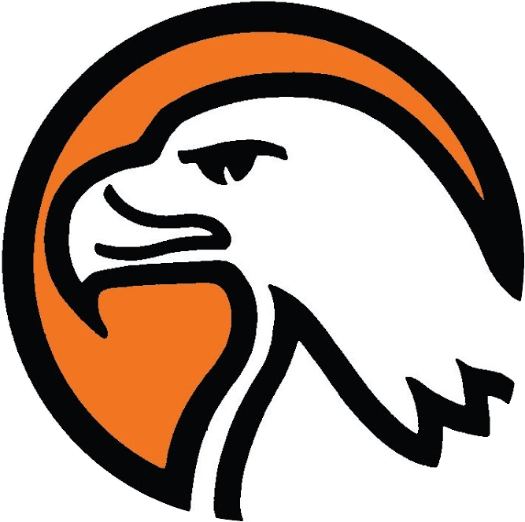
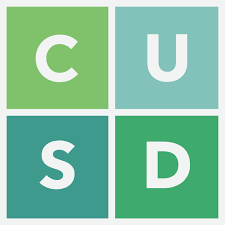

- Cornell Aguaclara (graduate technical advisor)
- Nexus Scholar Program (graduate consultant)
ABOUT ME
I am a PhD student in Computer and Information Science at the University of Pennsylvania, where I am advised by Professor Nikolai Matni. I additionally work as a contract machine learning engineer for Goldman Sachs in the Compliance Engineering division.
I'm interested in learning theory for dynamic systems with an emphasis on fairness, and am interested in pursuing graduate research in this field with the goal of eventually applying the knowledge and experience I gain in order to emphasize social welfare in deployed models and algorithms. Prior research in this field focused on the dynamics created by adversarial strategic users interacting with multiple services. This work has been accepted to AISTATS 2024, and a trimmed version has been accepted as an oral presentation to the AAAI workshop EcoSys 2024. I additionally have two published papers in machine learning on the applications side.
I can be reached through email at ess239 at cornell dot edu, and I have public Google Scholar and LinkedIn profiles.
EDUCATION
PhD @ University of Pennsylvania
Penn Engineering | Aug 2024-present | Philadelphia, PA
Ph.D. in Computer and Information Science
Advisor: Nikolai Matni
MS @ Cornell University
Bowers CIS | Aug 2022-May 2024 | Ithaca, NY | [Thesis]
Masters of Science in Computer Science with a minor in Linguistics
Advisor: Sarah Dean
- Machine Learning Theory
- Machine Learning in Feedback Systems
- Deep Generative Models
- Computer Vision
- Honors Introduction to Analysis
- Game Theory I
(A or higher in all listed courses)
BS @ Cornell University
College of Engineering | Aug 2018-May 2022 | Ithaca, NY
Bachelors of Science in Computer Science with a minor in Linguistics
Magna Cum Laude with Honors
- Cornell University Sustainable Design (algorithms and predictions team lead)
- Cornell Undergraduates in Linguistics (social chair)
- Advanced Topics in Machine Learning *
- Learning with Big Messy Data *
- The Structure of Information Networks *
- Principles of Large-Scale Machine Learning
- Advanced Language Technologies *
- Natural Language Processing
- Introduction to Computer Vision
- Introduction to Machine Learning
- Introduction to Analysis of Algorithms
* Graduate level courses
(A- or higher in all listed courses)
Bethlehem Central High School
Sep 2013-Jun 2018 | Delmar, NY
- Science Bowl (co-captain)
- Linguistics Club (president)
- Science Olympiad
- Masterminds
- Varsity Cross-Country
- Varsity Track
- Varsity Swim and Dive
- AP Computer Science A
- Introduction to Computer Science
- Digital Electronics
RESEARCH
Sarah Dean Lab
Jan 2023-present | Ithaca, NY
Research direction: learning theory for dynamic systems
- Researched regret bounds of strategic classification in a contextual bandit setting.
- Characterizing convergence of multi-learner systems in the presence of strategic behavior by users as the only student on the project.
- Proved convergence conditions for a strategic usage setting and submitted work conferences where it is in review.
Kilian Weinberger Lab
Sept 2022-Apr 2023 | Ithaca, NY
Research direction: natural language processing
- Researched and implemented applications of latent diffusion models to text generation.
- Published to NeurIPS 2023.
Udell Group
Advisor: Madeleine Udell | Jun 2020-Jul 2022 | Ithaca, NY
Research direction: unsupervised learning
- Published a machine learning paper in AAAI-22 on the imputation of missing data using a Gaussian copula model.
- Implemented frameworks and benchmarks to study active learning for distribution shift.
Life History Lab
Advisor: Marlen Gonzalez | Jun 2019-Dec 2021 | Ithaca, NY
Research direction: computational neuroscience
- Cleaned and scored data and automated administrative tasks in the lab using R, improving in data analysis skills.
- Wrote Python scripts under supervisor Dr Gonzalez to implement the Balloon Analog Risk Task (BART) for fMRI and for mTurk.
- Processed participants and collected data using the BART, Stroop, and Cyberball tasks in the Cornell fMRI scanner for later analysis.
SUNY Albany Forensic Chemistry Lab
Advisor: Igor Lednev | Jun 2016-Aug 2017 | Albany, NY
Research direction: computational biology
- Wrote MATLAB scripts under supervisor Dr Lednev to conduct Singular Value Decomposition (SVD) analysis on 1GB of cell images for the classification of cellular patterns characteristic of lead toxicity.
- Prepared buffer solutions, grew both bacterial cells and human kidney cells, and tested/observed the effects of lead and EDTA on the latter, using light microscopy.
INDUSTRY EXPERIENCE
Goldman Sachs | Contract
Role: Machine Learning Engineer @ Compliance Engineering
Sept 2022-present | Remote
- Creating and developing machine learning algorithms as a contract worker.
- Consulted to improve and fix existing algorithms and training methods.
- Productionized my NLP training pipeline, creating tests and undergoing code reviews.
Goldman Sachs | Internship
Role: Engineering Summer Analyst @ Compliance Engineering
Jun 2022-Aug 2022 | New York City, NY
- Trained BERT-based transformer models to classify text documents, achieving high recall and good workload reduction on a test set.
- Developed a semi-supervised model to highlight sections of text influential for a classification task.
- Implemented a generalized pipeline for training large NLP models for future projects.
Goldman Sachs | Internship
Role: Engineering Summer Analyst @ Compliance Engineering
Jun 2021-Aug 2021 | New York City, NY
- Implemented MapReduce jobs to efficiently filter, tokenize, label, and embed ~10 million articles stored in Google Protocol Buffer format.
- Researched and developed LSTM and attention models to predict on a Named Entity Recognition task, achieving high accuracy over ~5 million sentences.
- Established a pipeline for training and evaluating future NLP models efficiently on new data, and constructed an API leveraging the model for ease of access.
TEACHING EXPERIENCE
CS 4670 Introduction to Computer Vision
Role: Graduate Teaching Assistant
Spring 2024 | Ithaca, NY
- Created programming questions and exams.
- Created reference materials for the class elaborating on lecture material.
CS 6785 Applied Machine Learning
Role: Head Teaching Assistant
Fall 2023 | New York City, NY
- Created homework assignments, programming questions, quizzes, and exams.
- Set grading deadlines and ensured everything was running according to schedule.
- Organized regular meetings with teaching assistants and graders.
- Held homework recitations to review student questions on the solutions.
CS 4780 Introduction to Machine Learning
Role: (Graduate) Teaching Assistant
Spr 2021-Spr 2023 | Ithaca, NY
- Created and graded assignments and exams.
- Held in-person office hours.
CS 3110 Data Structures and Functional Programming
Role: Teaching Assistant
Fall 2020 | Ithaca, NY
- Held a recitation and created unique powerpoints every week expanding on both current material and on specific concerns raised by students.
- Held online office hours and graded assignments.
UCode Programming Academy
Role: Instructor
Jun 2019-Sep 2020 | Ithaca, NY
- Taught Python, HTML, CSS, and block-based languages to students from first to eleventh grade, developing interpersonal communication skills.
- Developed a curriculum for teaching Python and adapted in-person curriculums for online learning.
Bethlehem Central High School
Role: Tutor
Sep 2017-May 2018 | Delmar, NY
- Taught high school math to other students in preparation for the Regents exam.
- Prepared students for Algebra 1, Algebra 2, Geometry, and Precalculus.
PROJECTS
Nexus Scholars Program Consulting
May 2022-Jan 2023 | Ithaca, NY
- Helped with computer science and linguistics consultation in a project to create a functional online dictionary for the Gayogohó꞉nǫʔ language.
- Researched Gayogohó꞉nǫʔ morphology and developed software to parse nominal structures into their constituent parts, enhancing the searchability of morphologically-complex words.
Cornell University Sustainable Design (CUSD)
Feb 2020-Jun 2022 | Ithaca, NY
- Developed an online algorithm to predict room usages and optimize energy consumption by the HVAC system in Upson Hall.
- Coordinated with two other subteams in 20+ meetings to gather information.
- Led the development of a script to generate accurate dummy data for initial algorithm training.
- Algorithm is forecasted to reduce unnecessary HVAC operation by over 70%.
Modeling Complex Contagion on Clique Based Networks
Feb 2021 | Ithaca, NY
- Developed a novel analytical approach in a group to approximate the final fraction of adopted nodes for a contagion in a clique based network.
- Implemented simulations to test the approximation, demonstrating consistency and accuracy of the model, and wrote a research paper on the results.
PUBLICATIONS/PREPRINTS
Strategic Usage in a Multi-Learner Setting
Authors: Eliot Shekhtman, and Sarah Dean
Accepted to AISTATS 2024.
Real-world systems often involve some pool of users choosing between a set of services. With the increase in popularity of online learning algorithms, these services can now self-optimize, leveraging data collected on users to maximize some reward such as service quality. On the flipside, users may strategically choose which services to use in order to pursue their own reward functions, in the process wielding power over which services can see and use their data. Extensive prior research has been conducted on the effects of strategic users in single-service settings, with strategic behavior manifesting in the manipulation of observable features to achieve a desired classification; however, this can often be costly or unattainable for users and fails to capture the full behavior of multi-service dynamic systems. As such, we analyze a setting in which strategic users choose among several available services in order to pursue positive classifications, while services seek to minimize loss functions on their observations. We focus our analysis on realizable settings, and show that naive retraining can still lead to oscillation even if all users are observed at different times; however, if this retraining uses memory of past observations, convergent behavior can be guaranteed for certain loss function classes. We provide results obtained from synthetic and real-world data to empirically validate our theoretical findings.
Strategic Usage in a Multi-Learner Setting
Authors: Eliot Shekhtman, and Sarah Dean
Accepted to the AAAI 2024 workshop EcoSys 2024.
[ poster ][ oral presentation slides ][ lighting talk ]
Real-world systems often involve some pool of users choosing between a set of services. Extensive prior research has been conducted on the effects of strategic users in single-service settings, with strategic behavior manifesting in the manipulation of observable features to achieve a desired classification; however, this can often be costly or unattainable for users and fails to capture the full behavior of multi-service dynamic systems. We analyze a setting in which strategic users choose among several available services in order to pursue positive classifications, while services seek to minimize loss functions on their observations. We show that naive retraining can lead to oscillation even if all users are observed at different times; however, we show necessary and sufficient conditions to guarantee convergent behavior if this retraining uses memory. We provide results obtained from synthetic and real-world data to empirically validate our theoretical findings.
Latent Diffusion for Language Generation
Authors: Justin Lovelace, Varsha Kishore, Chao Wan, Eliot Shekhtman, and Kilian Weinberger
Accepted to NeurIPS 2023.
Diffusion models have achieved great success in modeling continuous data modalities such as images, audio, and video, but have seen limited use in discrete domains such as language. Recent attempts to adapt diffusion to language have presented diffusion as an alternative to existing pretrained language models. We view diffusion and existing language models as complementary. We demonstrate that encoder-decoder language models can be utilized to efficiently learn high-quality language autoencoders. We then demonstrate that continuous diffusion models can be learned in the latent space of the language autoencoder, enabling us to sample continuous latent representations that can be decoded into natural language with the pretrained decoder. We validate the effectiveness of our approach for unconditional, class-conditional, and sequence-to-sequence language generation. We demonstrate across multiple diverse data sets that our latent language diffusion models are significantly more effective than previous diffusion language models.
- Implemented loss masking and normalization for training the latent diffusion model on BART encoder latents.
- Implemented text sampling using a BART decoder.
- Ran baseline experiments using GPT-2.
Online Missing Value Imputation and Correlation Change Detection for Mixed-type Data via Gaussian Copula
Authors: Yuxuan Zhao, Eric Landgrebe, Eliot Shekhtman, and Madeline Udell
Accepted to AAAI 2022.
Missing value imputation is crucial for real-world data science workflows. Imputation is harder in the online setting, as it requires the imputation method itself to be able to evolve over time. For practical applications, imputation algorithms should produce imputations that match the true data distribution, handle data of mixed types, including ordinal, boolean, and continuous variables, and scale to large datasets. In this work we develop a new online imputation algorithm for mixed data using the Gaussian copula. The online Gaussian copula model meets all the desiderata: its imputations match the data distribution even for mixed data, improve over its offline counterpart on the accuracy when the streaming data has a changing distribution, and on the speed (up to an order of magnitude) especially on large scale datasets. By fitting the copula model to online data, we also provide a new method to detect change points in the multivariate dependence structure with missing values. Experimental results on synthetic and real world data validate the performance of the proposed methods.
- Implemented the online expectation-maximization algorithm.
- Ran experiments on performance in the minibatch and online settings.